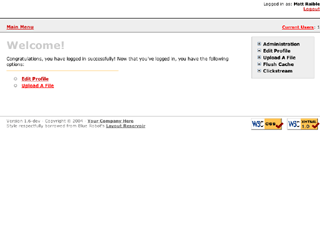

AppFuse is an open source project and application that uses open source tools built on the Java platform to help you develop Web applications quickly and efficiently. It was originally developed to eliminate the ramp-up time found when building new web applications for customers. At its core, AppFuse is a project skeleton, similar to the one that's created by your IDE when you click through a wizard to create a new web project.
AppFuse 2.0.2 Released! This release includes upgrades to Spring Security 2.0, jMock 2.4, the ability to customize code generation templates and many bug fixes.
AppFuse 1.x uses Ant to create your project, as well as build/test/deploy it. AppFuse 2.0 uses Maven 2 to create your project as well as build/test/deploy it. IDE support is much better in 2.0 because you can generate the IDE project files with Maven plugins. AppFuse 1.x uses XDoclet and JDK 1.4+.
AppFuse 2.0 is a restructuring of AppFuse 1.x to use Maven 2 and JDK 5 and annotations. The major reasons we've changed to Maven 2 are:
- Dependency downloading
- Easier maintenance (everything can be compiled at once)
- Easier upgrading for end-users
If you'd like to help out or ask questions about AppFuse 2.0, please do so on the user mailing list. If you'd like to use AppFuse 2.0, see the demos and videos and use the QuickStart Guide to get started.
New features in AppFuse 2.0:
- Maven 2 Integration
- Upgraded WebWork to Struts 2
- JDK 5, Annotations, JSP 2.0, Servlet 2.4
- JPA Support
- Generic CRUD backend
- Full Eclipse, IDEA and NetBeans support
- Fast startup and no deploy with Maven Jetty Plugin
- Testable on multiple appservers and databases with Cargo and profiles
AppFuse Light is a simpler version of AppFuse
that allows you to use Maven 2 or Ant for building/testing/deploying.
The Spring Framework has greatly enhanced AppFuse since February 2004.
It's used throughout for its Hibernate/iBATIS support, declarative transactions, dependency binding and layer decoupling.
This clean and simple framework has greatly reduced the complexity of AppFuse, and also eliminated
many lines of code. In short, for J2EE - it's the best thing since sliced bread.
Special thanks to all the sponsors of this project.
Latest News
- May 11, 2008: AppFuse 2.0.2 Released. Bug fixes, upgrades to Spring Security 2.0, jMock 2.4 and the ability to customize code generation templates.
- May 11, 2008: AppFuse Light 1.8.2 Released. Library Upgrades, including @Service, @Repository and @Controller annotations for Spring.
- November 26, 2007: AppFuse 2.0.1 Released. Bug fixes and upgraded to Spring 2.5.
- September 17, 2007: AppFuse 2.0 Released. Maven 2, Java 5, JPA, Struts 2 and many other features to make developing Java applications easier.
Blogs: AppFuse News and Raible Designs.
Project Information
- Project Name: AppFuse
- Latest Release: 2.0.2
- Latest Release Status: Production
- Project Type: Starter Web Application
Contents
- Screenshot and Demos
- Download and Installation
- Features
- Support
- Participation
- Sponsors
- Revision History
Screenshot and Demos
Screenshot:

Live Demos:
Demo Videos:
Below are are videos that are up-to-date with version 2.0 M5.
Hello World

13.2 MB, 6 minutes 14 seconds
|
Easy CRUD with Struts 2

14.2 MB, 6 minutes 6 seconds
|
Download and Installation
To download and install AppFuse, see the QuickStart Guide.
Features
AppFuse has the following features:
- Cross-platform, implemented using JavaTM
technology.
- Should run on all
Java Servlet containers that support Java 5 and Servlet 2.4.
- Authentication (using Acegi Security), Remember Me, Self Registration, Password Hint, GZip Compression
- Support for SSL throughout, including login only
- i18n, with built-in translations for Dutch, Italian, Spanish, Brazilian Portuguese and Chinese
- Label Tag Library for displaying validation errors next to fields
- Rich Unit Testing environment using DBUnit, JUnit, jMock and Canoo's WebTest
- Easy configuration and rapid development using annotations,
Spring and the
AppFuse Maven Plugin.
- Web Framework Options: Struts 2, Spring MVC, JSF and Tapestry
- Persistent Framework Options: Hibernate, iBATIS or JPA
Support
AppFuse is a community-supported open-source product. You can find
support by subscribing to the various
mailing lists offered
in this java.net project. You can also checkout the
AppFuse FAQ.
Participation
At this point, the best way to participate in this project is to use AppFuse. By using it,
you will likely find some things that you'd like to improve. Talk to us on the mailing list
and let us know what you'd like to see improved.
Goals for the 2007-08 include improved useability with IDEs and other tools. For more details, see the
roadmap
Revision History
- Version 2.0.2 - [May 11, 2008]
- Version 2.0.1 - [November 26, 2007]
- Version 2.0 - [September 18, 2007]
- Version 1.9.4 - [October 23, 2006]
- Version 1.9.3 - [July 11, 2006]
- Version 1.9.2 - [June 6, 2006]
- Version 1.9.1 - [April 7, 2006]
- Version 1.9 - [January 14, 2006]
- Version 1.8.2 - [August 27, 2005]
- Version 1.8.1 - [June 15, 2005]
- Version 1.8 - [April 29, 2005]
- Version 1.7 - [December 8, 2004]
- Version 1.6.1 - [November 9, 2004]
- Version 1.6 - [October 9, 2004]
- Version 1.5 - [May 27, 2004]
- Version 1.4 - [March 1, 2004]
Part of the
Java Enterprise Community.